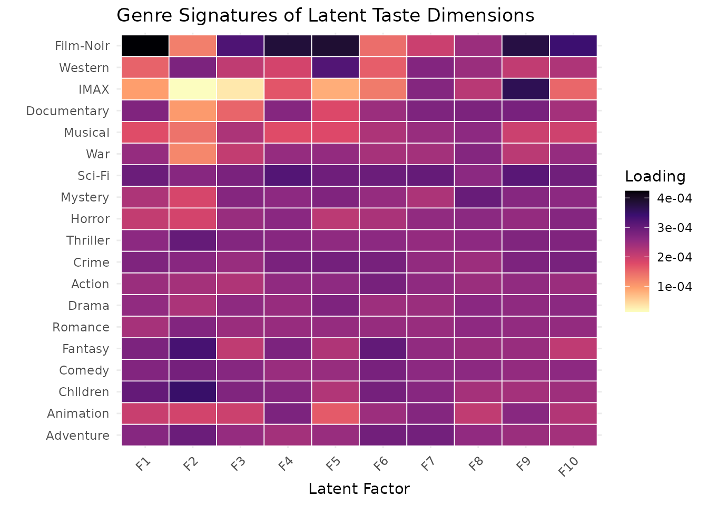

Building a Movie Recommendation Engine with NMF
Source:vignettes/recommendation-systems.Rmd
recommendation-systems.RmdMotivation
Recommendation systems power some of the most impactful applications of machine learning — from Netflix suggestions to Spotify playlists. The core idea behind collaborative filtering is simple: users who agreed in the past will agree in the future. Given a sparse matrix of user–item ratings, NMF discovers latent preference dimensions that explain the observed ratings and predict unobserved ones.
A critical subtlety: zeros in a ratings matrix mean “not rated,” not
“rated zero.” Standard NMF treats zeros as targets to reconstruct, which
wastes model capacity on predicting absence. RcppML’s
mask_zeros parameter solves this by restricting the loss to
observed entries only.
API Reference
Core Recommendation Pattern
The primary interface is nmf() with
mask_zeros = TRUE:
model <- nmf(data, k, mask_zeros = TRUE, seed = 42)Key parameters for recommendation:
| Parameter | Type | Default | Description |
|---|---|---|---|
k |
integer or vector | — | Rank (number of latent factors). Pass a vector for cross-validation. |
mask_zeros |
logical | FALSE |
If TRUE, zero entries do not contribute to
the loss. |
test_fraction |
numeric | 0 |
Fraction of non-zero entries held out for cross-validation. |
L1 |
numeric(2) | c(0, 0) |
L1 penalty on (W, H). Promotes sparse factor profiles. |
L2 |
numeric(2) | c(0, 0) |
L2 penalty on (W, H). Prevents large factor values. |
loss |
string | "mse" |
Loss function: "mse", "mae",
"huber", or distribution-based. |
seed |
integer | NULL |
Random seed for reproducible initialization. |
Theory
Matrix Completion via NMF
NMF decomposes the ratings matrix as , where (movies × k) captures latent movie attributes, (k × users) captures user preferences, and scales each dimension’s importance.
The predicted rating for user on movie is:
Why mask_zeros Matters
With mask_zeros = FALSE, the loss function sums over
all entries:
Since over 95% of entries are zero (unrated), the model spends most
effort predicting zeros rather than learning actual preferences. With
mask_zeros = TRUE:
where is the set of observed (non-zero) ratings. This focuses the model on the signal that matters for recommendation.
Worked Examples
Example 1: Discovering Latent Taste Dimensions
We fit NMF to the MovieLens data and interpret the latent factors through their genre composition.
data(movielens)
genres <- attr(movielens, "genres")
model <- nmf(movielens, k = 10, mask_zeros = TRUE,
L1 = c(0, 0.2), tol = 1e-5, maxit = 100, seed = 42,
verbose = FALSE)Each column of represents a latent “taste dimension.” By examining which genres load most heavily on each factor, we can interpret what preference axis it captures.
# Coerce pattern matrix to numeric for arithmetic
genres_num <- as(genres, "dgCMatrix") * 1.0
# Compute genre loadings per factor: genres (19 x 3867) times W (3867 x 10)
genre_factor <- as.matrix(genres_num %*% model@w)
genre_counts <- Matrix::rowSums(genres_num)
genre_factor_norm <- genre_factor / genre_counts
genre_df <- expand.grid(
Genre = rownames(genres),
Factor = paste0("F", seq_len(ncol(model@w)))
)
genre_df$Loading <- as.vector(genre_factor_norm)
ggplot(genre_df, aes(x = Factor, y = Genre, fill = Loading)) +
geom_tile(color = "white", linewidth = 0.3) +
scale_fill_viridis_c(option = "magma", direction = -1) +
labs(title = "Genre Signatures of Latent Taste Dimensions",
x = "Latent Factor", y = "") +
theme_minimal() +
theme(axis.text.x = element_text(angle = 45, hjust = 1))
Each column in this heatmap reveals a coherent preference axis. Factors that load heavily on Action and Sci-Fi but not Romance capture affinity for action-oriented films. Factors dominated by Drama and Romance represent art-house or character-driven taste profiles. The NMF discovers these genre clusters without any genre labels in the input — only the rating patterns themselves.
# Top 5 movies for first 4 factors
top_movies <- do.call(rbind, lapply(1:4, function(f) {
top_idx <- order(model@w[, f], decreasing = TRUE)[1:5]
movie_genres <- vapply(top_idx, function(idx) {
col <- as.logical(as.vector(genres_num[, idx]))
paste(rownames(genres)[col], collapse = ", ")
}, character(1))
data.frame(
Factor = paste0("F", f),
Movie = rownames(movielens)[top_idx],
Loading = round(model@w[top_idx, f], 3),
Genres = movie_genres,
stringsAsFactors = FALSE
)
}))
knitr::kable(top_movies, row.names = FALSE,
caption = "Top 5 movies per latent factor (first 4 factors)")| Factor | Movie | Loading | Genres |
|---|---|---|---|
| F1 | Teenage Mutant Ninja Turtles (1990) | 0.007 | Children, Comedy, Fantasy, Action, Sci-Fi |
| F1 | Detour (1945) | 0.006 | Crime, Film-Noir |
| F1 | What’s Eating Gilbert Grape (1993) | 0.006 | Drama |
| F1 | I Like It Like That (1994) | 0.006 | Comedy, Romance, Drama |
| F1 | Pat and Mike (1952) | 0.006 | Comedy, Romance |
| F2 | Romeo Is Bleeding (1993) | 0.011 | Crime, Thriller |
| F2 | NeverEnding Story III, The (1994) | 0.011 | Adventure, Children, Fantasy |
| F2 | Lord of Illusions (1995) | 0.011 | Horror |
| F2 | Addams Family Values (1993) | 0.011 | Children, Comedy, Fantasy |
| F2 | I Like It Like That (1994) | 0.010 | Comedy, Romance, Drama |
| F3 | Air Bud (1997) | 0.004 | Children, Comedy |
| F3 | Priest (1994) | 0.004 | Drama |
| F3 | In the Company of Men (1997) | 0.003 | Comedy, Drama |
| F3 | Air Force One (1997) | 0.003 | Action, Thriller |
| F3 | Thing from Another World, The (1951) | 0.003 | Horror, Sci-Fi |
| F4 | Dracula (Bram Stoker’s Dracula) (1992) | 0.004 | Fantasy, Romance, Thriller, Horror |
| F4 | Twister (1996) | 0.004 | Adventure, Romance, Action, Thriller |
| F4 | Ran (1985) | 0.004 | Drama, War |
| F4 | Thomas Crown Affair, The (1968) | 0.003 | Romance, Drama, Crime, Thriller |
| F4 | Craft, The (1996) | 0.003 | Fantasy, Drama, Thriller, Horror |
Example 2: Rank Selection via Cross-Validation
Choosing the right number of latent factors is critical. Too few factors underfit (can’t capture genre nuances); too many overfit (memorize noise in individual ratings). RcppML’s built-in cross-validation holds out a fraction of observed ratings and measures prediction error on the held-out set.
cv <- nmf(movielens, k = c(3, 5, 8, 10, 15, 20), test_fraction = 0.2,
mask_zeros = TRUE, tol = 1e-5, maxit = 100, seed = 42, verbose = FALSE)
knitr::kable(cv[, c("k", "train_mse", "test_mse")], digits = 3,
col.names = c("Rank (k)", "Train MSE", "Test MSE"),
caption = "Cross-validation: prediction error on held-out ratings")| Rank (k) | Train MSE | Test MSE |
|---|---|---|
| 3 | 9.997 | 8.467 |
| 5 | 9.592 | 8.163 |
| 8 | 9.205 | 7.833 |
| 10 | 9.071 | 7.773 |
| 15 | 8.696 | 7.303 |
| 20 | 8.759 | 6.920 |
Test MSE decreases as rank increases, showing that additional factors capture real preference structure. The gap between train and test error indicates generalization capacity — a widening gap signals overfitting.
Example 3: Why mask_zeros Matters
The mask_zeros parameter fundamentally changes what the
model optimizes. We compare both modes at the same ranks to illustrate
the difference.
cv_no_mask <- nmf(movielens, k = c(3, 5, 8, 10, 15, 20), test_fraction = 0.2,
mask_zeros = FALSE, tol = 1e-5, maxit = 100, seed = 42,
verbose = FALSE)
compare_df <- data.frame(
k = cv$k,
`Test MSE (mask_zeros=TRUE)` = round(cv$test_mse, 3),
`Test MSE (mask_zeros=FALSE)` = round(cv_no_mask$test_mse, 4),
check.names = FALSE
)
knitr::kable(compare_df, align = "r",
caption = "Cross-validation test error: masking zeros vs. not")| k | Test MSE (mask_zeros=TRUE) | Test MSE (mask_zeros=FALSE) |
|---|---|---|
| 3 | 8.467 | 0.3150 |
| 5 | 8.163 | 0.3081 |
| 8 | 7.833 | 0.3243 |
| 10 | 7.773 | 0.3439 |
| 15 | 7.303 | 0.3555 |
| 20 | 6.920 | 0.3852 |
The results reveal two fundamentally different optimization targets:
-
mask_zeros = TRUE: Test MSE is on the scale of squared rating errors (~7–10), because the test set contains only actual ratings (values 1–5). Higher rank consistently improves predictions. -
mask_zeros = FALSE: Test MSE is much smaller (~0.3) because the test set is dominated by zero entries that are trivially predicted. But test error increases with rank beyond k = 5, revealing classic overfitting — the model spends its capacity fitting the rare non-zero entries at the expense of predicting the sea of zeros.
For recommendation, mask_zeros = TRUE is the correct
choice: it evaluates the model on the task it actually performs —
predicting what users will rate, not predicting which entries are
missing.
Key Takeaways
-
mask_zeros = TRUEis essential for recommendation: zeros mean “unobserved,” not “zero-rated.” Masking them focuses the model on actual preferences. - Rank selection via cross-validation prevents overfitting. The test error curve reveals the optimal complexity for the data.
- Genre analysis of latent factors confirms that NMF discovers interpretable preference dimensions from rating patterns alone — no genre labels needed.
-
NNLS projection (via
nnls()) enables real-time recommendation for new users without refitting the model.
See the Cross-Validation
vignette for automated rank selection with test_fraction,
and the Distributions vignette for
non-Gaussian loss functions on ratings data.